quadrantChart
title 風險矩陣分布範例
x-axis "可能性低" --> "可能性高"
y-axis "嚴重度低" --> "嚴重度高"
quadrant-1 "高度/極高風險 (須立即改善)"
quadrant-2 "高度/極高風險 (須立即改善)"
quadrant-3 "中度風險 (有計畫改善)"
quadrant-4 "低/極低風險 (維持現狀)"
"墜落 (4,5)": [0.75, 0.9]
"感電 (3,5)": [0.6, 0.9]
"噪音 (4,2)": [0.75, 0.3]
"跌倒 (2,2)": [0.35, 0.35]
營造工程施工風險評估實務
甲種職業安全衛生業務主管訓練課程
講師 何明信
2026-05-01
講師簡介
姓名：何明信
學歷：成大環醫所 、職安衛技師
經歷：檢查員30年 (製造、危機設、營造、化工職衛科、專委)
現職：114年退休
E-mail：msho7336959@gmail.com
1. 教材內容介紹
課程目標
理解 營造工程風險特性與相關法規要求
掌握 施工風險評估的完整流程（危害辨識、分析、評量、處理）
學會 運用風險評估工具（風險矩陣、評估表單）於實務
區分 設計階段、施工規劃階段、作業前的風險評估重點
建立 風險資訊傳遞與追蹤管制的正確觀念
增加 營造風險評估廣度（國際化）
Note
期待課後能協助公司建立施工風險評估制度，持續更人專業成長，並指導同仁執行。
營造工程風險特性
| 特性 | 說明 |
|---|---|
| 工程多元 | 每件工程皆為客製化，作業內容不一 |
| 環境多變 | 戶外作業，受天候、地質、鄰房影響大 |
| 動態性高 | 危害隨工程進度而改變（基礎→結構→裝修） |
| 人員流動 | 協力廠商眾多，專業素質不一，流動率高 |
| 高風險作業多 | 開挖、支撐、施工架、鋼構吊裝、拆除等 |
台灣營造業職災發生率及嚴重度均遠高於其他行業，須透過系統性風險評估來預防。
相關法規依據
- 職業安全衛生法 第5條第2項：工程設計或施工者應於設計或施工規劃階段實施風險評估。
- 職業安全衛生法施行細則 第8條：風險評估定義（辨識、分析、評量）。
- 營造安全衛生設施標準 第3條：安全衛生設施於施工規劃階段納入考量，列入施工計畫。
- 營造安全衛生設施標準 第6條：作業前應實施危害調查、評估。
- 職業安全衛生管理辦法 第12條之3：變更管理（修改製程、作業程序前應評估風險）。
- 政府採購法 第70條之1：機關應分析潛在施工危險，編製安全衛生圖說及經費。
Caution
違反上述規定，除可能發生職災外，亦將面臨行政處罰。
風險管理程序 (ISO 31000)
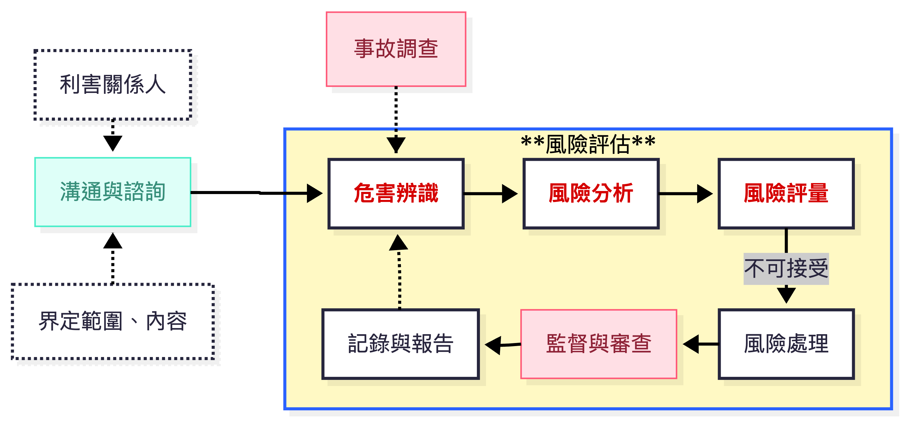
範圍：工程全生命週期（規劃、設計、施工、使用、拆除）
準則：法令、指引、實務規範、工程經驗
關鍵名詞定義
危害 (Hazard)：可能造成人員傷亡或健康損害的根源（如：開口、感電）。
風險 (Risk)：危害發生的可能性 × 後果的嚴重度。
風險評估 (Risk Assessment)：包括辨識、分析、評量風險的程序。
風險處理 (Risk Treatment)：對不可接受風險擬定對策，並執行追蹤。
Tip
風險 = 可能性 × 嚴重度
風險評估的核心就是計算這個值，並決定是否要進一步控制。
施工風險評估的類型
根據指引，營造工程全生命週期需辦理以下評估：
| 階段 | 評估類型 | 主辦者 |
|---|---|---|
| 規劃設計階段 | 設計階段施工風險評估 | 設計單位 (建築師/技師) |
| 施工前 | 施工規劃階段施工風險評估 | 施工者 (營造廠) |
| 每日作業前 | 作業前危害調查、評估 | 工地主任/安衛人員 |
| 變更時 | 工程變更施工風險評估 | 設計者或施工者 |
| 使用階段 | 維護/修繕/拆除作業風險評估 | 使用者或施工者 |
設計階段風險評估小組
召集人/工程設計負責人
專案主辦人員
職業安全衛生人員
工址調查人員
各專業設計工程師/結構、土木、機電等
施工規劃人員
預算/規範編製人員
繪圖人員
Tip
職業安全衛生人員須具備職安衛風險評估專業知識，引導小組進行法令遵循與程序控管。
作業拆解 (Work Breakdown Structure, WBS)
目的：將複雜工程分解為可管理的作業單元，以便模擬風險。
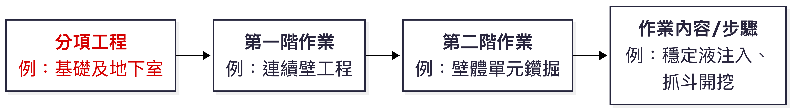
編碼範例：B（分項） - b（第一階） - ⅱ（第二階） - 03（作業步驟） = Bbⅱ03
作業拆解案例：連續壁工程
| 分項工程 | 第一階作業 | 第二階作業 | 作業內容 (部分) |
|---|---|---|---|
| B.基礎及地下室 | a.準備作業 | i.機具設備進場 | 01.平板車載運連續壁鑽機 |
| c.連續壁 | i.施工場地整備 | 02.泥漿池、土碴坑施築 | |
| ii.導溝施築 | 01.挖溝機開挖 | ||
| iii.壁體單元施工 | 01.抓斗開挖、穩定液循環 | ||
| 02.鋼筋籠吊放 | |||
| 03.特密管澆置混凝土 |
拆解越細，越能發現潛在可能危害。
危害辨識方法 - 5M1E 魚骨圖
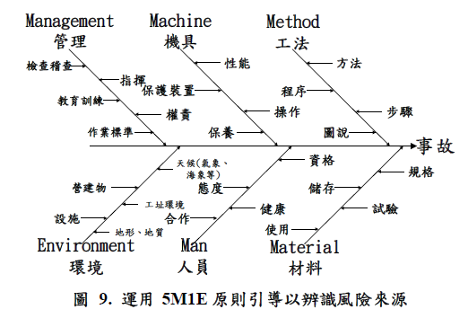
透過小組討論，逐一列出可能導致事故的根源(危害？)。
危害/風險情境描述 - 5W1H
| 項目 | 說明 | 範例 |
|---|---|---|
| What (什麼危害) | 風險來源 | 吊掛鋼筋籠 - 危害? |
| Why (為何發生) | 起因 | 吊耳焊接不實、鋼索斷裂 |
| When (何時) | 時間 | 鋼筋籠吊起瞬間/過程? |
| Where (何處) | 地點 | 連續壁單元上方 |
| Who (誰受害) | 影響對象 | 吊掛手、下方作業人員 |
| How (如何處理) | 對策 | 檢查吊耳強度、設置警戒區、使用自動脫鉤器 |
完整描述風險情境，才能擬定有效對策。
風險分析與評量
步驟：
分析
決定可能性 (Likelihood) 等級
決定嚴重度 (Severity) 等級
評量
- 查風險矩陣得風險值與等級
這是半量化方法，受主觀影響
5級風險矩陣：可能性分級(例)
| 等級 | 描述 | 作業頻率 / 發生機率參考 |
|---|---|---|
| 5 | 幾可確定 | 日常性作業（每日數次），或過去一年曾發生多次 |
| 4 | 極有可能 | 經常性作業（每週數次），或業界常見災害類型 |
| 3 | 可能 | 週期性作業（每月數次），或曾有災害案例 |
| 2 | 不太可能 | 間歇性作業（每季或更少），或國內極少發生 |
| 1 | 幾乎不可能 | 偶發性作業（每年1次以下），或從未聽聞 |
營造業可依據作業頻率（如每週幾次）、作業人數（如每次10人以上）來判斷可能性。?
5級風險矩陣：嚴重度分級(例)
| 等級 | 描述 | 人員傷亡 | 財物/作業損失 |
|---|---|---|---|
| 5 | 災難性的 | 1人以上死亡，或3人以上重傷 | 停工1個月以上，或損失超過1000萬 |
| 4 | 重大 | 1人以上重傷（需住院） | 停工1週以上，或損失100萬~1000萬 |
| 3 | 中等 | 1人以上受傷需住院療養 | 停工1天以上，或損失10萬~100萬 |
| 2 | 較低 | 1人以上受傷需送醫治療（未住院） | 停工1天以內，或損失1萬~10萬 |
| 1 | 可忽略的 | 輕傷（包紮敷藥即可） | 現場清理後即可復工，損失1萬以下 |
嚴重度應同時考量人員傷害與工程損失，取較高等級。
5x5 風險矩陣 (風險值與等級)(例)
| 風險值 | 嚴重度5 | 嚴重度4 | 嚴重度3 | 嚴重度2 | 嚴重度1 |
|---|---|---|---|---|---|
| 可能性5 | 25 (極高) | 20 (極高) | 15 (高度) | 10 (高度) | 5 (中度) |
| 可能性4 | 20 (極高) | 16 (高度) | 12 (高度) | 8 (中度) | 4 (中度) |
| 可能性3 | 15 (高度) | 12 (高度) | 9 (中度) | 6 (中度) | 3 (低度) |
| 可能性2 | 10 (高度) | 8 (中度) | 6 (中度) | 4 (低度) | 2 (低度) |
| 可能性1 | 5 (中度) | 4 (中度) | 3 (低度) | 2 (低度) | 1 (極低) |
風險等級(例)
| 風險等級 | 風險值範圍 | 因應對策 |
|---|---|---|
| 極高風險 (EH) | 20 - 25 | 立即停止作業，須採取工程控制或重新設計 |
| 高度風險 (H) | 10 - 16 | 立即改善，限期完成風險對策 |
| 中度風險 (M) | 5 - 9 | 有計畫地改善，指定責任人限期處理 |
| 低度風險 (L) | 3 - 4 | 維持現有防護，持續觀察 |
| 極低風險 (EL) | 1 - 2 | 無需進一步行動，但應記錄 |
實例：高處作業墜落風險
作業情境：5樓外牆施工架（高度15公尺）上進行模板組立。
| 評估項目 | 說明 | 等級 |
|---|---|---|
| 危害 | 高處開口，無完整護欄 | |
| 可能性 | 每日作業，過去曾發生墜落虛驚事件 | 4 (極有可能) |
| 嚴重度 | 墜落15公尺，可能造成死亡 | 5 (災難性的) |
| 風險值 | 4 x 5 = 20 | R=20 |
| 風險等級 | 極高風險 (EH) | EH |
對策措施（消除/降低風險）：
優先：採用系統式施工架，並設置雙層護欄及下拉桿。
使用安全母索：作業人員必須穿戴安全帶，並確實掛勾於母索。
設置防墜網：於施工架外側及下方設置防墜網。
勤前教育：每日確認安全帶掛勾點。
對策後評估：可能性降至2（不太可能），嚴重度仍為5，風險值=10（高度風險），仍須持續降低與管理？
實例：臨時用電感電風險
作業情境：工地使用延長線接電鋸，電纜線破損且橫越潮濕地面。
| 評估項目 | 說明 | 等級 |
|---|---|---|
| 危害 | 潮濕環境 + 破損電線 | |
| 可能性 | 每日使用，曾有人員觸電（輕傷） | 3 (可能) |
| 嚴重度 | 可能導致心室顫動、死亡 | 5 (災難性的) |
| 風險值 | 3 x 5 = 15 | R=15 |
| 風險等級 | 高度風險 (H) | H |
對策措施（工程/管理控制）：
裝設漏電斷路器 (ELCB)：於分電盤或延長線插座端裝設，動作電流30mA以下。
電纜線保護：架高電纜線或使用橡膠護套覆蓋，避免水浸。
替代工法：使用電池式電動工具，消除感電風險。
每日檢查：作業前檢查電線、插頭、斷路器功能。
對策後評估：可能性降至1（幾乎不可能），嚴重度仍為5，風險值=5（中度風險），可接受 ?
風險矩陣圖示（墜落 vs 感電）
風險對策的優先順序 (階層)
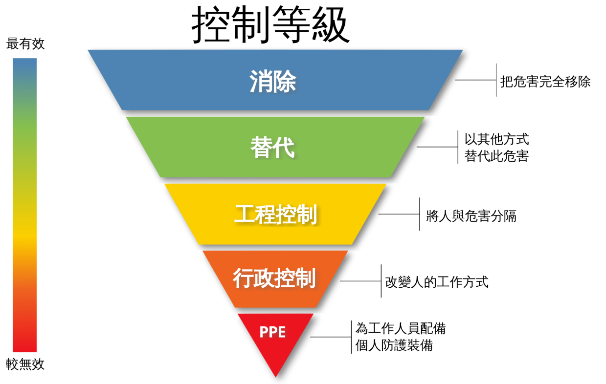
消除風險 - 改變設計/工法、AI 識別？
降低風險 - 以安全方法替代危險
工程控制 - 護欄、安全網、漏電斷路器、AI 識別等
管理控制 - 教育訓練、標準作業程序、自主檢查等
個人防護具 - 安全帽、安全帶、護目鏡等
重要概念：消除風險是最有效的對策（本質安全），個人防護具是最後一道防線。
進階閱讀：美國安全工程師專業雜誌文章 Risk Assessment & Hierarchies of Control
風險對策類型範例
| 對策類型 | 工程設計階段 | 施工規劃階段 | 墜落/感電對策實例 |
|---|---|---|---|
| 消除 | 修改結構，避免高空作業 | 採地面組立後吊裝 | 使用高空工作車取代施工架 |
| 降低 | 指定安全工法 | 選用自動脫鉤器 | 採用低電壓或電池工具 |
| 工程控制 | 設計永久護欄 | 規劃安全母索、安全網 | 裝設漏電斷路器 |
| 管理控制 | 規範施工計畫 | 訂定安全作業標準 | 每日電氣檢點、勤前教育 |
| 個人防護具 | 編列安全帶預算 | 採購高品質安全帶 | 穿戴絕緣手套、安全鞋 |
設計階段風險評估成果
設計者完成風險評估後，必須產出以下文件，納入招標文件：
施工安全衛生設施參考圖說：如護欄、施工架、擋土支撐標準圖。(只有硬體？)
施工安全衛生規範： (風險控制措施？)
法令規定應辦事項
本工程施工安全衛生注意事項
各項計畫送審規定
安全衛生設施設置規範
職業安全衛生經費明細表：量化編列，如安全網數量、護欄長度。
合理工期建議：避免因趕工而忽略安全。
施工風險評估表 (標準版) 5級矩陣範例
| 作業拆解 | 危害 | 可能風險狀況 | 現有防護措施 | 風險分析 (L/S) | 新增防護措施 | 處理後風險 (L/S) |
|---|---|---|---|---|---|---|
| 施工架組拆 (高度>2m) | 墜落 | 未使用安全帶、踏板未鋪滿 | 交叉拉桿、部分護欄 | L:4, S:5 風險值:20 (極高) |
1.全面鋪設踏板 2.設置安全母索 3.強制使用安全帶 |
L:2, S:5 風險值:10 (高度) |
| 臨時電配線 | 感電 | 電纜破損、潮濕、無漏電斷路器 | 接地線、提醒標示 | L:3, S:5 風險值:15 (高度) |
1.裝設漏電斷路器 2.電纜架高 3.每日檢查 |
L:1, S:5 風險值:5 (中度) |
風險處理後，目標是將風險值降至 中度 (≤9) 或更低。
作業前危害調查與勤前教育 (搭配5級矩陣)
法源：營造安全衛生設施標準第6條
時機：每日或每項作業開始前
執行者：職業安全衛生人員、工作場所負責人、專任工程人員
重點：
針對當日高風險作業（風險值≥10），逐項確認對策是否到位。(安全確認)
確認工作場所環境（有無新危害？）。
確認機具設備、防護設施有效性（特別是漏電斷路器、安全帶掛點）。
告知可能危害及安全作業要領 (危險預知)，並說明風險等級。
勞工複誦安全要領並簽名確認。
工程變更風險評估 (5級矩陣)
時機：現地情況差異、施工方法改變、主要機具變更、安衛設施變更等
流程：
辨識：變更內容帶來的新危害。
分析：使用5級矩陣評估新風險的可能性與嚴重度。
評量：計算風險值及等級。
處理：對高度/極高風險擬定對策，修正施工計畫。
啟用前檢查：所有措施完成後，經資深人員檢查確認才能開始施作。
範例：原採傳統施工架，變更為高空工作車，墜落風險從L:4,S:5（20極高）降為L:2,S:4（8中度）。
風險矩陣實務要點
分級更細：極高風險(20-25)必須立即停工改善。
量化評估：透過作業頻率、人數、傷亡程度合理給分，避免主觀。
動態更新：隨著對策實施，重新評估殘餘風險。
結合目標管理：將高度/極高風險項目列為年度安全衛生管理方案。
教育訓練：讓所有主管及勞工理解風險等級的意義及對應的行動。
使用5級矩陣，能更精準地配置資源，優先處理墜落、感電、倒塌等重大風險。
施工規劃階段風險評估流程
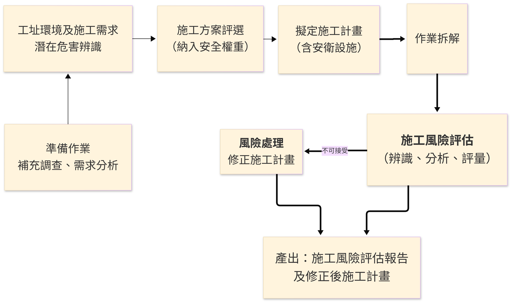
施工方案評選範例
| 方案 | 技術 (20%) | 成本 (30%) | 工期 (20%) | 安全 (30%) | 總分 | 排序 |
|---|---|---|---|---|---|---|
| 傳統順打工法 | 80 | 85 | 80 | 60 | 76 | 2 |
| 逆打工法 | 85 | 75 | 90 | 85 | 83 | 1 |
「安全」項目的權重不應低於各項目權重之平均值，建議至少15%-30%。
施工風險評估表 (標準版) 重點欄位
| 作業拆解 | 危害 | 可能風險狀況 | 現有防護措施 | 風險分析 (L/S) | 新增防護措施 | 風險對策執行成果 |
|---|---|---|---|---|---|---|
| 連續壁鋼筋籠吊放 | 物體飛落 | 吊耳斷裂、吊索滑脫，鋼筋籠掉落擊傷人員 | 起重機定期檢查、吊鉤防滑舌片 | L:2, S:3 風險值:6 (高度) |
1. 吊耳進行非破壞檢測 2. 鋼筋籠下方設置牽引繩 3. 吊掛半徑內禁止進入 |
修改施工計畫：增加檢測規定及警戒區 |
| … | … | … | … | … | … | … |
事業單位可依工程規模選擇簡易版、基本版或標準版評估表。
作業前危害調查與勤前教育
法源：營造安全衛生設施標準第6條
時機：每日或每項作業開始前
執行者：職業安全衛生人員、工作場所負責人、專任工程人員
重點：
確認工作場所環境（有無新危害？）
確認機具設備、防護設施有效性
確認作業人員身心狀況
告知可能危害及安全作業要領 (危險預知)
勞工複誦安全要領並簽名確認
作業前危害調查表 (範例)
| 調查內容 | 現況 | 潛在危害 | 修正後安全作業要領 |
|---|---|---|---|
| 作業環境 | 3樓樓板邊緣無護欄 | 墜落 | 作業前設置臨時護欄或安全母索，並穿戴安全帶 |
| 機具設備 | 起重機支撐腳未完全伸展 | 翻覆 | 操作手確認支撐腳完全伸出，下方鋪設墊木 |
| 作業步驟 | 鋼樑吊掛後需人員解索 | 被撞、墜落 | 使用遙控脫鉤器，人員站立於安全平台並掛安全帶 |
所有作業人員必須在勤前教育紀錄表上簽名，表示已了解風險及對策。
工程變更風險評估
時機：現地情況差異、施工方法改變、主要機具變更、安衛設施變更
流程：
辨識：變更內容帶來的新危害
分析：新風險的可能性與嚴重度
評量：是否可接受？
處理：修正施工計畫、修改圖說、增設設施、教育訓練
啟用前檢查：所有措施完成後，經資深人員檢查確認才能開始施作
依據職業安全衛生管理辦法第12條之3，變更前必須評估。
拆除作業風險評估重點
拆除作業風險極高，必須事前詳實調查：
| 調查項目 | 內容 |
|---|---|
| 圖說與紀錄 | 設計圖、施工紀錄、維修改建紀錄、竣工圖 |
| 構造物現況 | 結構損壞、腐蝕、裂縫、含石綿或放射性物質？ |
| 管線與設備 | 電力、瓦斯、給排水、化學品殘留 |
| 鄰近環境 | 道路、建築物、人潮、交通 |
拆除計畫須包括：工法、機具、支撐系統、分類、交通維持、安全衛生管理、緊急應變。
部分拆除（如結構補強）更要詳加評估保留部分的穩定性。
風險資訊傳遞與追蹤管制
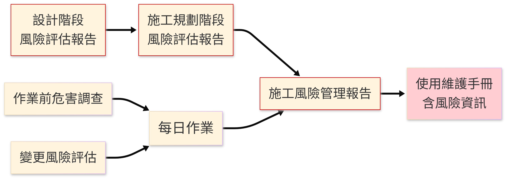
主要設計者：彙整各設計者成果，編製「設計階段施工風險評估報告」傳給施工者。
主要施工者：彙整各施工者風險評估成果，編製「施工風險管理報告」交付業主，轉給使用單位。
追蹤管制表：列出風險項目、對策、負責人、完成日期、結案確認。
實務演練建議
分組討論：選擇一個工地常見作業（如：施工架組拆、擋土支撐、鋼筋吊掛）。
填寫風險評估表：使用標準版或基本版表格。
進行作業拆解。
辨識3~5項潛在危害。
評估現有防護措施下的風險等級。
研擬新增控制措施，降低風險至可接受。
簡報分享：各組說明評估結果與對策。
講師回饋：補充法令要求與實務經驗。
透過實際操作，才能真正掌握風險評估的技巧。
總結
源頭管理：設計階段就要納入施工安全考量，消除或降低風險。
全員參與：由小組進行評估，結合專業與經驗。
動態管理：作業前、變更時都要評估，不能一勞永逸。
資訊透明：風險評估成果要確實傳遞給現場施工人員（透過勤前教育）。
持續改善：追蹤對策成效，發現新風險立即再評估。
Q & A
參考資料：
勞動部職業安全衛生署，營造工程風險評估技術指引 (第三版)，114年2月
營造甲種職業安全衛生業務主管教材
2. 營造工程施工風險評估技術指引（介紹）
導引
依《職業安全衛生法》第5條第2項規定：「工程之設計或施工者，應於設計或施工規劃階段實施風險評估。」
本內容由講師依據勞動部職安署 「營造工程風險評估技術指引（第三版）」 編訂，協助營造業甲種業務主管：
- ✅ 掌握營造全生命週期風險評估方法
- ✅ 運用風險矩陣量化風險等級（半量化）
- ✅ 掌握設計、施工規劃、作業前、變更及拆除階段之風險評估重點
- ✅ 建立風險評估資訊傳遞與追蹤管制機制
營造工程風險特性
| 特性 | 說明 | 影響 |
|---|---|---|
| 動態性 | 危害隨工程進度改變 | 需分階段評估，持續更新 |
| 複雜性 | 多工種、多分包、界面多 | 需整合管理，強化溝通 |
| 環境不確定 | 天候、地質、鄰房、地下管線 | 設計階段即應盡可能詳實調查 |
| 高風險作業多 | 開挖、支撐、施工架、鋼構、拆除 | 需採行工程控制及管理措施 |
| 人員流動率高 | 臨時工多，教育訓練不易 | 作業前危害告知、勤前教育與監督至關重要 |
💡 營造業職災發生率及嚴重度均高於其他行業，惟有系統性風險評估方可有效預防。
法源依據
| No | 法規 | 主要內容 |
|---|---|---|
| 1 | 職業安全衛生法 第5條第2項 |
設計或施工規劃階段 實施風險評估 |
| 2 | 職安法施行細則 第8條 |
風險評估定義: 辨識、分析、評量 |
| 3 | 營造安全衛生設施標準 第3條、第6條 |
施工規劃納入安衛設施 作業前實施危害調查 |
| 4 | 職安管理辦法 第12條之3 |
變更管理: 修改程序/設備前評估風險 |
| 5 | 政府採購法 第70條之1 |
機關應分析潛在危險 編製安衛圖說及經費 |
📌 違反上述規定，除可能發生職業災害外，將面臨行政處罰。
關鍵名詞定義
| 名詞 | 定義（依指引） |
|---|---|
| 危害 (Hazard) | 潛在會造成人員受傷及健康妨害之來源。 |
| 風險 (Risk) | 對目標之不確定性之效應，常為可能性 × 嚴重度。 |
| 風險評估 (Risk Assessment) | 辨識、分析及評量風險之程序。 |
| 風險處理 (Risk Treatment) | 將低風險之過程，對不可接受風險擬定對策並執行。 |
| 殘餘風險 | 風險處理後仍存在的風險，應予監控並在必要時再處理。 |
目標：將風險控制在 最低合理可行範圍 (ALARP)。
風險管理架構
| 構面 | 項目 | 內容說明 |
|---|---|---|
| 領導與承諾 (Leadership & Commitment) | 工程業主/高層支持 | 提供管理推動所需之決策與支持 |
| 設計 (Design) | 界定範圍、準則 | 確認管理邊界與驗收標準 |
| 準備作業 | 行政與技術資源的預先配置 | |
| 風險評估 | 識別、分析與評估風險等級 | |
| 實施 (Implementation) | 風險處理 | 執行風險應對措施（規避、減輕、轉移或承擔） |
| 監督查核 | 確認執行過程符合設計規劃 | |
| 評估與改善 (Evaluation & Improvement) | 績效評估 | 以數據化方式衡量管理成效 |
| 持續改善 | 針對偏差或不足提出優化方案 | |
| 整合 (Integration) | 納入組織管理系統 | 將成果制度化並導入組織運作 |
參考ISO 31000:2018及CNS 31000:2021風險管理原則、架構及程序。
風險管理程序 (Process)
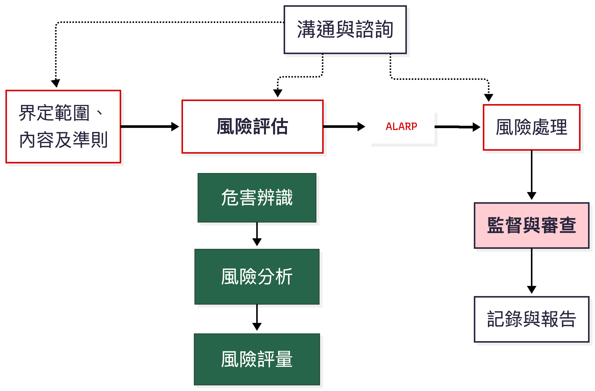
範圍：全生命週期（規劃、設計、施工、使用、拆除）
準則：法令、指引、實務規範、工程經驗、災害案例
各角色當責
| 角色 | 主要職責 (依指引) |
|---|---|
| 工程業主 | 慎選工址與設計施工廠商；要求實施風險評估；建立風險管理平台；監督審核 |
| 設計者 | 規劃設計階段風險評估；依評估成果修正設計；編製安衛圖說、規範及經費；製作使用維護手冊 |
| 施工者 | 施工規劃階段風險評估；作業前危害調查評估；變更風險評估；落實施工計畫 |
| 監造者 | 訂定安衛監督查核計畫；審查施工計畫及風險評估報告；執行查核 |
| 工作者 | 參與諮詢；接受教育訓練及健康檢查；遵守作業標準；落實勤前教育 |
準備作業 – 成立風險評估小組
設計階段小組組成
| 角色 | 職稱/人員 | 職責說明 |
|---|---|---|
| 召集人 | 工程設計負責人 | 負責整體統籌、決策與跨部門協調 |
| 專案主辦人員 | 專案管理人員 | 負責專案推動與整體執行管理 |
| 職業安全衛生人員 | 具風險評估專業人員 | 負責風險辨識、分析與評估 |
| 工址調查人員 | 現地調查人員 | 提供現場環境、地形與條件資料 |
| 各專業設計工程師 | 設計專業人員 | 提供設計技術面之風險資訊 |
| 施工規劃人員 | 施工管理人員 | 規劃施工方法、流程與可行性 |
| 預算／規範編製人員 | 成本與規範人員 | 編列成本與制定相關技術規範 |
施工規劃階段小組組成
| 角色 | 職稱/人員 | 職責說明 |
|---|---|---|
| 召集人 | 工地主任／資深主管 | 負責整體統籌、現場決策與跨單位協調 |
| 專任工程人員 | 工程專責人員 | 負責工程技術管理與執行監督 |
| 職業安全衛生人員 | 安衛專責人員 | 負責風險辨識、危害控制與安全管理 |
| 施工規劃人員 | 施工管理人員 | 規劃施工流程、工法與現場配置 |
| 分項工程主辦 | 各分項負責人 | 負責各工項執行與風險控管 |
| 協力廠商代表 | 外包/承攬單位代表 | 配合施工並落實安全與品質要求 |
| 作業主管 | 現場帶班主管 | 負責第一線作業指揮與安全督導 |
評估小組應涵蓋工程專業、安衛、施工實務等成員，必要時邀請設計單位提供諮詢。
作業拆解 (Work Breakdown Structure)
目的：將工程分解為可管理、可評估風險的作業單元。（舉例）
| 層級 | 編碼 | 項目 | 說明 |
|---|---|---|---|
| 分項工程 | B | 基礎及地下室工程 | 整體施工項目 |
| 第一階作業 | B-c |
連續壁工程 | 主要施工工法 |
| 第二階作業 | B-c-ⅲ |
壁體單元施工 | 工法細分作業 |
| 作業內容/步驟 | B-c-ⅲ-02 |
穩定液注入、抓斗鑽掘 泥漿泵啟動、抓斗下放速度控制 |
實際施工活動 細部操作行為（可進行風險辨識） |
✅ 拆解越細，越能完整辨識潛在危害。
危害辨識 – 5M1E 魚骨圖
前已說明，不贅述。
方法多元，不限於此 。
需經驗累積，多看事故調查報告。
評估小組逐項檢討，列出每項作業可能的所有危害根源。
風險描述 – 5W1H
| 項目 | 說明 | 範例（施工架組拆墜落） |
|---|---|---|
| What （什麼危害） | 危害來源 | 高處開口、未設置護欄 |
| Why （為何發生） | 致災原因 | 交叉拉桿過早拆除、未使用安全帶 |
| When （何時） | 發生時間點 | 施工架組立或拆除階段 |
| Where （何處） | 發生地點 | 建築物外牆高度2公尺以上 |
| Who （誰受害） | 影響對象 | 施工架組配作業勞工、下方人員 |
| How （如何處理） | 風險對策 | 系統式施工架、安全母索、強制使用安全帶 |
完整描述風險情境，才能擬定有效對策。
風險分析 – 5級可能性基準（參考）
| 等級 | 可能性描述 | 作業頻率 | 作業人次參考 |
|---|---|---|---|
| 5 | 幾可確定 | 日常性作業 | 10人以上 |
| 4 | 極有可能 | 經常性作業 | 6-9人 |
| 3 | 可能 | 週期性作業 | 4-5人 |
| 2 | 不太可能 | 間歇性作業 | 2-3人 |
| 1 | 幾乎不可能 | 偶發性作業 | 1人 |
營造工程亦可參考過去災害統計：同類工程曾發生多次→給較高等級。
風險分析 – 5級嚴重度基準（參考）
| 等級 | 嚴重度描述 | 人員傷亡 | 財物/作業損失 |
|---|---|---|---|
| 5 | 災難性的 | 1人以上死亡或3人以上重傷 | 停工1個月以上 |
| 4 | 重大 | 1人以上重傷住院 | 停工1週以上 |
| 3 | 中等 | 1人以上受傷住院療養 | 停工1天以上 |
| 2 | 較低 | 1人以上受傷送醫（未住院） | 停工1天以內 |
| 1 | 可忽略的 | 輕傷（包紮敷藥） | 現場清理後復工 |
嚴重度應同時考量人員傷害與工程/財物損失，取較高等級。
5x5 風險矩陣（參考）
| 風險值 | 嚴重度5 | 嚴重度4 | 嚴重度3 | 嚴重度2 | 嚴重度1 |
|---|---|---|---|---|---|
| 可能性5 | 25 | 20 | 15 | 10 | 5 |
| 可能性4 | 20 | 16 | 12 | 8 | 4 |
| 可能性3 | 15 | 12 | 9 | 6 | 3 |
| 可能性2 | 10 | 8 | 6 | 4 | 2 |
| 可能性1 | 5 | 4 | 3 | 2 | 1 |
| 風險等級 | 風險值範圍 | 因應對策 |
|---|---|---|
| 極高風險 (EH) | 20-25 | 立即停止作業，須採工程控制或變更設計 |
| 高度風險 (H) | 10-16 | 立即改善，限期完成風險對策 |
| 中度風險 (M) | 5-9 | 有計畫地改善，指定責任人限期處理 |
| 低度風險 (L) | 3-4 | 維持現有防護，持續觀察 |
| 極低風險 (EL) | 1-2 | 無需進一步行動，但仍應記錄 |
風險評量與可接受度
風險評量為將風險分析結果（風險值/等級）與預先設定的風險判定基準比較，決定風險是否可接受。
風險基準應由工程業主或設計/施工者依據：
職業安全衛生法令最低要求
工程實務規範及指引
以往災害案例教訓
社會期待（公共安全、鄰房安全等）
建議：
中度風險以上 (風險值 ≥ 5) 為不可接受風險，應實施風險處理。
低度風險及極低風險 (風險值 ≤ 4) 可維持現有防護，但仍需定期監控。
風險處理 – 對策類型及優先順序
風險控制層級表（Hierarchy of Controls）
| 層級 | 控制策略 | 說明 | 具體措施範例 |
|---|---|---|---|
| 1 | 消除風險 | 從源頭移除危害 | 改變設計或施工工法，使危害不再存在 |
| 2 | 降低風險（替代） | 以較安全方式取代原有危害 | 使用低危險材料或較安全設備 |
| 3 | 工程控制 | 透過設備或設施隔離危害 | 護欄、安全網、漏電斷路器 |
| 4 | 管理控制 | 透過制度與管理降低風險 | 教育訓練、SOP、自主檢查 |
| 5 | 個人防護具 | 由個人配戴防護裝備 | 安全帽、安全帶 |
例
| 優先順序 | 對策類型 | 實例（墜落預防） |
|---|---|---|
| 1 | 消除 | 採用地面組裝後整體吊裝，減少高空作業 |
| 2 | 降低 | 使用高空工作車取代施工架 |
| 3 | 工程控制 | 設置護欄、安全母索、防墜網 |
| 4 | 管理控制 | 訂定施工架組拆作業標準、實施認證 |
| 5 | 個人防護具 | 強制使用安全帶並確實掛勾 |
風險處理 – 追蹤管制
指定負責人：每項風險對策應指派人員於期限內完成。
處理後再評估：實施對策後，重新分析殘餘風險（可能性及嚴重度），確認風險值已降至可接受範圍。
管制表追蹤：
紀錄風險項目、對策內容、負責人、完成日期。
管理階層定期審查執行進度及成效。
如發現殘餘風險仍不可接受或衍生新風險，應立即再評估、調整對策。
📌 風險處理不是一次性工作，而是滾動式管理與修正。
設計階段施工風險評估
實施時機
- 可行性研究、綜合規劃、基本設計、細部設計階段
主要工作
工址環境現況調查及工程功能需求分析
工址及工程需求潛在危害辨識
設計方案評選（納入安全權重）
設計成果作業拆解及施工風險評估
風險處理：修正設計、選用安全工法、編製安衛圖說及規範、編列經費
輸出成果
設計階段施工風險評估報告
施工安全衛生設施參考圖說
施工安全衛生規範
職業安全衛生經費明細表
使用維護手冊（初稿）
此階段為源頭管理，消除風險的成本最低、效果最好。
設計方案評選表（例）
| 方案 | 功能 (10%) | 技術 (15%) | 成本 (25%) | 工期 (10%) | 工址環境 (10%) | 安全 (20%) | 維護 (10%) | 總分 | 排序 |
|---|---|---|---|---|---|---|---|---|---|
| 順打工法 | 85 | 80 | 90 | 80 | 70 | 60 | 80 | 78.5 | 2 |
| 逆打工法 | 85 | 85 | 75 | 85 | 80 | 85 | 85 | 82.5 | 1 |
「安全」權重應不低於各項目權重之平均值，建議 ≥15%。
施工規劃階段風險評估
實施時機
- 施工前，施工者擬定施工計畫時
主要工作
工址環境補充調查及施工需求分析
辨識工址及施工需求潛在危害
施工方案評選（納入安全權重）
擬定施工計畫（含安衛設施）
作業拆解及施工風險評估
風險處理：修正施工方法、改變程序、選用安全機具、設置設施、訂定SOP、教育訓練、自主檢查、個人防護具
輸出成果
施工規劃階段施工風險評估報告
修正後施工計畫（含安衛設施施工圖、安全作業標準等）
施工規劃階段評估結果應納入施工計畫，並作為作業前危害調查的基礎。
施工方案評選表（例）
| 方案 | 技術 (20%) | 機具 (15%) | 人力 (10%) | 成本 (25%) | 工期 (10%) | 安全 (15%) | 環境 (5%) | 總分 | 排序 |
|---|---|---|---|---|---|---|---|---|---|
| 傳統施工架 | 80 | 80 | 85 | 90 | 85 | 60 | 80 | 79.8 | 2 |
| 高空工作車 | 85 | 85 | 90 | 80 | 85 | 90 | 85 | 85.0 | 1 |
即使初期成本較高，但安全權重納入後，優選方案仍可能勝出。
作業前危害調查與勤前教育
法源
營造安全衛生設施標準第6條：「雇主使勞工於營造工程工作場所作業前，應指派所僱之職業安全衛生人員、工作場所負責人或專任工程人員等專業人員，實施危害調查、評估，並採適當防護設施，列入施工計畫執行。」
實施方式
時機：每日作業前或每項作業開始前
調查內容：
工作場所環境現況（有無新危害）
機具設備、安全設施有效性
作業步驟及可能風險
評量：判定是否有殘餘風險或新生風險
處理：即時調整作業方法、增設防護設施
勤前教育：告知勞工危害及安全作業要領，勞工複誦並簽名
作業前危害調查與危害告知流程
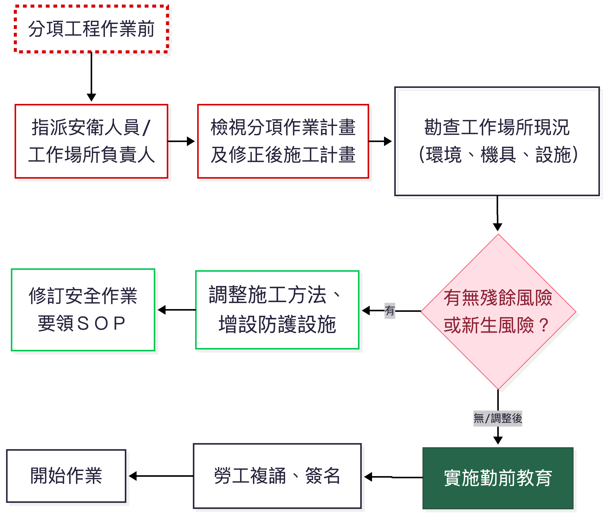
勤前教育紀錄應妥善保存，備供查核。
工程變更風險評估
時機
現地情況差異（如地質與設計不符）
工程內容或設計變更
主要施工方法改變
主要機具設備變更
主要安全衛生設施變更
實施步驟
辨識變更可能帶來的新危害
使用風險矩陣分析新風險等級
對不可接受風險擬定對策
修正變更設計或變更施工計畫
實施變更管理：
更新圖說文件管制
調整機具設備及安全設施
辦理變更作業教育訓練
修改管理制度及檢查表
啟用前檢查：由資深人員確認所有措施完成後方可開始作業
依據職安管理辦法第12條之3：變更前未經評估，不得逕行施工。
拆除作業施工風險評估
事前調查重點
圖說及紀錄：設計圖、施工紀錄、竣工圖、維修改建紀錄
構造物現況：結構損壞、腐蝕、裂縫、有無石綿、放射性物質
管線及設備：電力、瓦斯、給排水、化學品殘留
鄰近環境：道路、建築物、人車流動
拆除計畫應包含
拆除方法及順序（穩定維持措施）
使用機具設備
拆除物處理及分類
交通維持計畫
職業安全衛生管理計畫
緊急應變計畫
拆除作業風險極高，必須擬定拆除計畫並實施風險評估後方可作業。
風險資訊傳遞與追蹤管制
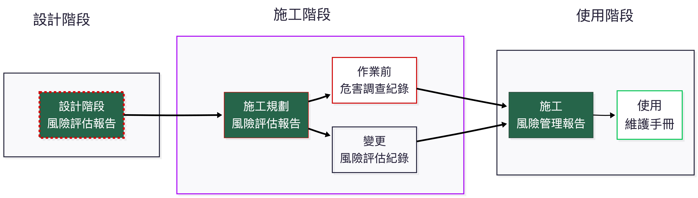
各階段風險資訊應完整記錄並傳遞予後續權責單位，確保風險對策持續有效。
風險處理追蹤管制表（例）
| 分項工程 | 作業內容 | 危害類型 | 風險等級 | 風險對策 | 負責人 | 完成日期 | 結案確認 |
|---|---|---|---|---|---|---|---|
| B.基礎及地下室 | 連續壁鋼筋籠吊放 | 物體飛落 | H (16) | 吊耳非破壞檢測、下方警戒、使用牽引繩 | 張三 | 5/20 | ✓ |
| C.結構工程 | 施工架組拆 | 墜落 | EH (20) | 改採系統架+安全母索+強制安全帶 | 李四 | 5/18 | ✓ |
| D.鋼構吊裝 | 鋼樑假固定 | 墜落、倒塌 | H (15) | 使用自鎖式螺栓、設置工作平台 | 王五 | 5/25 | 持續追蹤 |
高度及極高風險項目應列為優先改善對象，並由管理階層定期審查。
風險評估表單 – 簡易版
（適用契約金額150萬以下或勞工人數未滿5人之微型工程）
| 作業環境 | 機具設備 | 作業名稱 | 作業步驟 | 可能風險狀況 | 現有防護設施 | 風險可否接受 | 風險對策執行成果 | 負責人 |
|---|---|---|---|---|---|---|---|---|
| 基地整平 | 挖土機 | 土方開挖 | 開挖深度1.5m | 地層崩塌 | 依法設置擋土支撐 | 可 | — | — |
| 鋼筋加工 | 裁切機 | 鋼筋裁切 | 操作裁切機 | 切傷、感電 | 護罩、接地、漏電斷路器 | 可 | — | — |
簡易版將風險分析併入評量，直接判斷可否接受。
風險評估表單 – 基本版
（適用150萬以上、5000萬以下或勞工人數5人以上、30人以下之工程）
| 編號 | 作業步驟 | 可能風險狀況 | 現有防護設施 | 風險可否接受 | 新增防護設施 | 處理後風險可否接受 | 對策執行成果 | 負責人 |
|---|---|---|---|---|---|---|---|---|
| B-c-ⅲ-02 | 鋼筋籠吊放 | 吊耳斷裂，鋼筋籠掉落 | 起重機定期檢查、吊鉤防滑舌片 | 否 (H) | 1.吊耳非破壞檢測 2.警戒區 3.牽引繩 |
可 (M) | 施工計畫修正第X頁 | 張三 |
基本版區分「法定防護設施」及「新增防護設施」二次評估。
風險評估表單 – 標準版
（適用5000萬以上、勞工人數30人以上或丁類危險性工作場所）
| 編號 | 作業步驟 | 危害類型 | 可能風險狀況 | 現有防護設施 | 風險分析 (L/S) | 風險評量 | 新增防護設施 | 處理後風險 (L/S) | 處理後評量 | 對策執行成果 | 負責人 |
|---|---|---|---|---|---|---|---|---|---|---|---|
| B-c-ⅲ-02 | 鋼筋籠吊放 | 物體飛落 | 吊耳斷裂、吊索滑脫 | 起重機檢查、防滑舌片 | L:3, S:5 | 15 (H) | 非破壞檢測、警戒區、牽引繩 | L:1, S:5 | 5 (M) | 施工計畫修正 | 張三 |
標準版詳細記錄風險分析(可能性/嚴重度/風險值/等級)及處理後再評估結果。
案例演練建議
分組討論（20分鐘）
選擇工地常見高風險作業：施工架組拆、擋土支撐、鋼構吊裝、臨時用電。
使用5x5矩陣及標準版評估表進行風險評估。
步驟
作業拆解至第二階或作業步驟。
辨識至少3項潛在危害。
評估現有防護措施下的風險等級（L/S值、風險值）。
對不可接受風險擬定新增對策。
再評估殘餘風險是否可接受。
小組發表 & 講師回饋（20分鐘）
分享評估成果及改善對策。
補充法令規定及實務最佳作法。
結語
源頭管理：設計階段即實施風險評估，消除或降低施工風險，效果最好、成本最低。
系統化程序：依循 ISO 31000 風險管理原則，持續溝通、監督、審查。
動態管理：施工規劃、作業前、變更時、拆除前，各階段皆應評估，不可一勞永逸。
全員參與：風險評估小組須納入安衛、工程、施工、分包商等成員。
資訊透明：風險評估成果必須傳遞至現場作業勞工（透過勤前教育及危害告知）。
落實施工風險評估，是提升營造安全文化、預防職業災害的根本之道。
Q & A
各事業單位可依工程規模與特性，參考指引表單格式，自訂符合實際需求之評估表格。
參考資料：
勞動部職業安全衛生署，營造工程風險評估技術指引（第三版），114年2月
營造工程施工風險評估技術指引解說手冊（核定版）
營造安全衛生設施標準、職業安全衛生管理辦法等相關法規
營造只有安全風險？健康呢？
Caution
你關心什麼健康議題？
3. 游離二氧化矽暴露風險評估（例）
台灣人造石案例
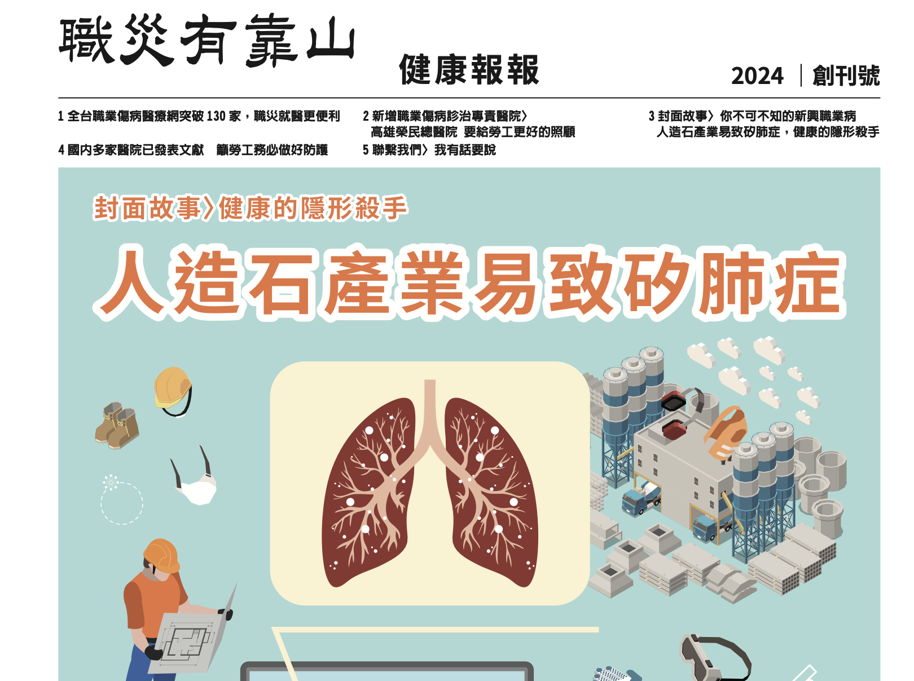
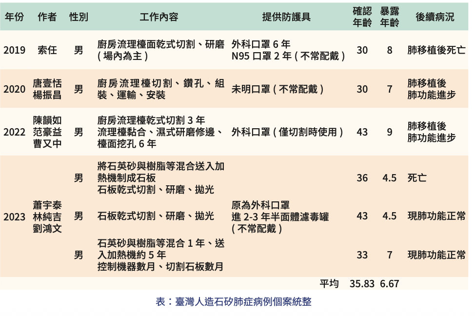
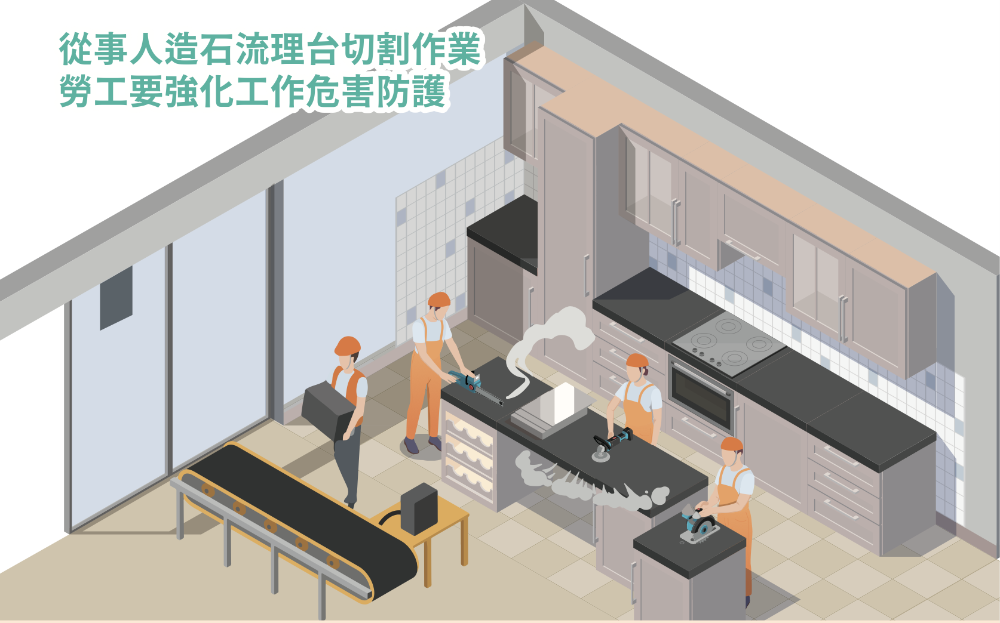
台灣人造石案例的啟示
在營造工程中，結晶型游離二氧化矽（respirable crystalline silica, RCS）暴露是常見卻容易被忽視的職業健康危害。
許多營造作業（如混凝土切割、鑽孔、研磨，磁磚、紅磚切割，以及近年興起的人造石加工）都會產生RCS，長期吸入可能導致矽肺症、肺癌等不可逆疾病。
以下整合澳洲安全作業規範與台灣本土案例，說明如何在營造工程的風險評估架構中納入RCS暴露管理，提供甲種業務主管實務操作參考。
一、危害辨識：哪些營造作業有RCS風險？
RCS主要來自含石英（Quartz）等結晶型二氧化矽的建材，包括：混凝土、紅磚、磁磚、花崗岩、砂岩，以及人造石（engineered stone）。營造工程中常見的高風險作業有：
使用電動手工具（切割機、砂輪機、鑽孔機）進行乾式切削、研磨、拋光
破碎、敲除混凝土或磚牆
乾式掃除、吹除粉塵
隧道開挖、礦石開採、石材加工
澳洲規範（Safe Work Australia, 2025）明確將上述作業定義為「crystalline silica substance processing」，並規定必須進行風險評估。
台灣人造石案例（財團法人職業災害預防及重建中心，2023）指出，人造石(石英石)含有高濃度二氧化矽（通常 > 90%），從業者暴露年資僅4-10年即發病，遠短於傳統矽肺症（>20年），且多位年輕患者需接受肺臟移植。這警示營造業若以乾式方式切割含高矽建材，風險極高。
二、風險評估方法：沿用既有風險矩陣，納入健康暴露評估
營造工程風險評估已熟悉 危害辨識 → 風險分析（可能性 × 嚴重度）→ 風險評量 → 風險處理 的流程。RCS暴露風險可融入此模式：
| 評估項目 | 說明 | 範例（乾式切割人造石） |
|---|---|---|
| 危害類型 | 化學性危害（粉塵） | RCS |
| 可能性（L） | 依作業頻率、粉塵濃度 | 每日作業，無濕式設備 → L=4（極有可能） |
| 嚴重度（S） | 健康後果 | 矽肺症（不可逆、可能死亡）→ S=5（災難性） |
| 風險值 | L × S | 20 → 極高風險，須立即改善 |
澳洲規範進一步建議，若無法確定RCS空氣濃度是否超過暴露標準（0.05 mg/m³ 八小時時量平均，台灣0.1mg/m³），應執行空氣監測。對於高風險作業（風險值 ≥ 10），應建立矽暴露風險控制計畫，並實施健康監測（肺功能、胸部X光或低劑量電腦斷層）。
三、風險控制措施：層級控制與實務要點
澳洲規範（Safe Work Australia, 2025）強調必須依層級控制（Hierarchy of Control） 選擇對策，且優先消除或取代，不可僅依賴呼吸防護具。
| 層級 | 對策類型 | 營造實例 |
|---|---|---|
| 消除 | 不使用含高矽建材或工法 | 以預鑄構件取代現場切割；以非矽質材料取代人造石 |
| 替代 | 改用低矽含量材料 | 選擇低石英含量的磁磚、紅磚 |
| 隔離 | 封閉作業區、人員隔離 | 切割作業在專門隔間內進行；使用全密閉駕駛室附HEPA過濾 |
| 工程控制 | 濕式作業、局部排氣、工具吸塵 | 切割機加裝水霧裝置（流量 ≥ 0.5 L/min）或M/H級吸塵器 |
| 管理控制 | 作業排程、清潔程序、教育訓練 | 減少切割次數；使用濕式擦拭或H級吸塵器清潔，禁止乾掃 |
| 個人防護 | 呼吸防護具（RPE） 呼吸防護計畫 |
選用N95／P2/P3等級，並通過密合度測試（fit test） |
台灣案例（財團法人職業災害預防及重建中心，2023）中，多位勞工即使雇主提供N95口罩，仍因未正確佩戴、有鬍鬚導致密合不良而罹病。因此，呼吸防護具應視為最後一道防線，且必須搭配教育訓練與監督。
四、監測機制：空氣監測與健康監測
4.1 空氣監測 (環測)
時機：當不確定暴露是否超過法定標準（0.1 mg/m³ 八小時時量平均），或為確認控制措施有效性時執行。
方法：委請職業衛生專業人員進行個人呼吸帶採樣，樣本送至認證實驗室分析。（直讀式？）
結果應用：若超過標準，立即採行與檢討控制措施。
4.2 健康監測
適用對象：從事高風險RCS暴露作業之勞工（粉塵作業）。
頻率：新進人員作業前特殊體格檢查，其後定期特殊健康追蹤（建議每年或依醫囑）。
檢查項目：肺功能（FEV1、FVC）、胸部X光（PA view）或低劑量電腦斷層（對早期矽肺症更敏感）。
記錄保存：健康監測報告至少保存30年。
台灣人造石案例（財團法人職業災害預防及重建中心，2023）顯示，多數患者確診時已進展至嚴重肺纖維化，需肺臟移植。早期發現至關重要，建議高暴露族群每年實施低劑量電腦斷層篩檢。
五、管理文件與資訊傳遞
(澳洲) 矽暴露風險控制計畫：對於高風險作業，應擬定書面計畫，內容包括：作業說明、控制措施、監測計畫、教育訓練、緊急應變。
安全作業標準（SOP）：將濕式作業、工具檢查、清潔程序標準化，並於每日勤前教育宣導。
記錄保存：空氣監測結果（30年）、健康監測報告（30年）、呼吸防護具密合度測試紀錄應妥善保存。
六、結論：營造風險評估應納入RCS暴露風險評估
傳統營造風險評估多聚焦於墜落、倒塌、感電等立即性危害，容易忽略慢性健康危害如游離二氧化矽暴露。
介紹澳洲規範的系統化評估方法（辨識高危害作業→量化風險→層級控制→監測驗證），並警惕於人造石案例的慘痛教訓，營造業應將RCS暴露納入施工規劃階段及作業前危害調查，確實執行工程控制與健康監測，才能有效保護勞工健康。
參考文獻
Safe Work Australia. (2025). Managing risks of respirable crystalline silica in the workplace: Code of practice.
財團法人職業災害預防及重建中心. (2023). 人造石產業易致矽肺症，健康的隱形殺手. 健康報報, (1), 3-7.
唐壹恬, & 楊振昌. (2020). 新興產業人造石造成的矽肺症. 臨床醫學月刊, 86卷6期 (2020/12) Pp. 736-739
陳韻如, 范豪益, & 曹又中. (2022). 流理台切割作業致矽肺症案例討論. 環境職業醫學會訊.
郭育良等人. (2023). 人造石作業勞工健康危害評估研究. 勞動部勞動及職業安全衛生研究所。
4. 科學研究：營造業墜落事故在風險評估上的應用
在營造業風險評估實務中，墜落一直是最主要且致命的危害類型。
本節整理 Halabi 等人（2022）發表於 Safety Science 的研究〈Causal factors and risk assessment of fall accidents in the U.S. construction industry: A comprehensive data analysis (2000-2020)〉，說明如何運用大數據分析強化風險評估的科學基礎，並提供我國營造甲種業務主管可借鏡的管理重點。
一、研究背景與方法
該研究分析美國 OSHA 資料庫中 23,057 件 墜落事故（2000年1月至2020年8月），涵蓋工程類型、作業活動、職業別、墜落高度、位置、防護具使用、傷害程度（致命/非致命）等變項。分析方法包括：
頻率分析：描述各變項的分布趨勢與佔比。
卡方檢定：檢驗各因子與傷害程度（致命 vs. 非致命）之間是否有顯著關聯。
邏輯斯迴歸：建立預測模型，估算各因子對「致命」結果的勝算比（odds ratio），並計算模型的預測準確率。
此研究為目前少數同時涵蓋描述統計、關聯性分析與預測建模的墜落風險研究，對風險評估的量化與動態管理極具參考價值。
二、關鍵研究發現
1. 墜落事故的時空分布
月份：60.5% 的事故發生在 4 月至 10 月，夏季（6-8月）佔比最高（43.9%），高溫與疲勞是可能原因。
星期：週末事故數較少，但致命率（RFFA）高於平日，可能因安全監管較鬆散。
時段：上午 10:00-12:00 與下午 13:00-15:00 為兩個高峰，分別對應上午疲勞與午後注意力下降。
2. 工程資訊與墜落風險
| 類別 | 最高事故佔比 | 備註 |
|---|---|---|
| 工程用途 | 商業建築 (32.5%) | 住宅新建及維修事故率上升 |
| 工程類型 | 新建工程 (51.8%) | 維修/改建佔比亦明顯增加 |
| 工程成本 | 低於 $50,000 (31.0%) | 小型公司防護與訓練不足 |
3. 作業活動與職業別
最高事故作業活動：屋頂作業（27.7% 致命事故）、外牆收尾、鋼結構吊裝、外牆木作。
最高事故職業：屋頂工（26.3% 致命事故）、建築 laborers、木工。
屋頂工的致命風險：為木工的 1.95 倍。
4. 墜落高度與位置
高度：80.5% 的事故發生在 30 英尺（約 9.15 公尺）以下，顯示低處墜落仍佔絕大多數，且防護法規在低處易被忽略。
位置：從屋頂墜落佔 30.0%（最高），其次為梯子（21.7%）、施工架（9.9%）、開口（7.3%）。
5. 防護具使用現況（嚴重警訊）
無任何防護（No protection） 佔 27.3%，此類事故的致命率高達 48.1%。
僅提供被動防護（如安全網、護欄）佔 44.7%；同時提供被動與個人防護者僅 5.5%。
與 1990-2001 年相比，防護具使用率未有顯著改善。
6. 年齡與經驗
45-64 歲勞工佔致命事故的 45.2%，且致命率隨年齡遞增。
經驗並不足以取代安全防護，高齡勞工生理條件較差，墜落後果更嚴重。
三、風險評估方法的應用：從描述到預測
1. 卡方檢定：找出與「致命」顯著相關的因子
| 因子 | Cramer’s V | 關聯強度 |
|---|---|---|
| 墜落高度 | 0.265 | 中等 |
| 職業 | 0.162 | 中等 |
| 墜落位置 | 0.143 | 中等 |
| 工程用途 | 0.133 | 中等 |
| 防護具狀態 | 0.087 | 稍弱但顯著 |
時間（星期、時段）、工程成本、SIC 碼等與致命性無顯著關聯（V < 0.06）。
-> 意涵：事故「發生頻率」高的因子（如清晨時段、低成本工程）不一定導致更高的致命率；風險評估應區分 「發生可能性」 與 「後果嚴重度」。
2. 邏輯斯迴歸模型
預測變項：墜落高度、工程用途、職業、作業活動、墜落位置、防護具。
模型表現：
整體預測正確率 77.7%（非致命 86.7%、致命 63.0%）
ROC 曲線下面積 AUC = 0.821（良好）
勝算比（Odds Ratio）—致命風險的關鍵驅動因子：
| 因子 | 勝算比 (OR) | 解釋 |
|---|---|---|
| 高度每增加一級 | 1.10 | 高度越高，致命風險增加 10% |
| 塔槽/儲槽工程 | 1.55 | 致命風險提高 55% |
| 屋頂工 | 1.56 | 致命風險提高 56% |
| 鋼構吊裝作業 | 1.38 | 致命風險提高 38% |
| 從屋頂墜落 | 1.57 | 致命風險提高 57% |
| 從開口墜落 | 1.73 | 致命風險提高 73% |
| 有提供防護具 | 0.83 | 致命風險降低 17% |
提供防護具雖能降低致命風險，但降幅僅 17%，顯示防護具的正確使用與配套工程控制仍嚴重不足。
四、對營造風險評估實務的啟示
1. 風險評估必須納入「高度」的細緻分級
傳統風險矩陣常將「高度 > 2m」一律視為高風險，但研究顯示 80% 墜落發生在 9m 以下，且高度與致命性呈連續正相關。建議：
將高度分為 ≤2m、2-6m、6-9m、9-15m、>15m 等層級。
低處墜落（如梯子、施工架 2-6m）亦應視為不可接受風險，並採取工程控制。
2. 特定作業與職業應納入專項風險評估
屋頂作業、鋼構吊裝、開口作業應列為高風險作業，於施工計畫中強制要求防墜計畫及第三方檢查。
作業前危害調查應針對屋頂工、鋼構工等職業，加強個人防護具適配性與使用監督。
3. 防護具不是萬能，但「無防護」絕對致命
研究顯示「無防護」佔 27.3%，致命率近五成。風險評估必須明確記錄：
防護具類型（被動/個人）
是否經適配性測試（fit test）
是否納入每日勤前教育與檢查清單
我國營造工地常見「有安全帶卻未掛勾」或「掛勾點不當」，可參考此研究強化稽核。
4. 年齡因子應納入風險評估
高齡勞工（45歲以上）墜落後致命風險顯著較高。風險評估可增加「年齡」作為風險因子：
高齡勞工從事高處作業時，應優先指派至地面作業或提供更完善的被動防護。
健康監測應包括平衡感、視力等與墜落相關的項目。（聽力？）
5. 事故趨勢分析可做為風險評估滾動更新的依據
研究發現，屋頂墜落比例從 24.7%（1997-2012）上升至 30.0%（2000-2020），顯示既有防護策略失效。營造事業單位應定期回顧自身事故或虛驚事件，更新風險評估表單中的「可能風險狀況」與「現有防護設施」。
建議建立工地風險資料庫，每年進行趨勢分析，調整下一年度的風險管理重點。
五、結論
Halabi 等人（2022）的研究證明，大量墜落事故數據經過嚴謹的統計分析，能夠：
辨識出真正影響致命後果的關鍵因子（高度、職業、位置、防護具），而不只是發生頻率。
提供量化風險評估所需的勝算比，使風險矩陣的「嚴重度」不再只是主觀給分。
驗證提供防墜防護具有助益，但改善幅度有限，工程控制與管理控制仍是確實使用的重要手段。
營造甲種業務主管可將上述發現轉化為以下具體行動：
風險評估表中增列 「墜落高度分級」 與 「年齡」 欄位。
針對屋頂、鋼構、開口等作業，於施工計畫強制納入被動防墜設施（安全網、護欄），並減少對個人防護具的依賴。
每季檢討工地墜落事故與虛驚，滾動修正風險評估表。
加強高齡勞工的作業前健康詢問與工作指派調整。
參考文獻（APA 格式）
Halabi, Y., Xu, H., Long, D., Chen, Y., Yu, Z., Alhaeck, F., & Alhaddad, W. (2022). Causal factors and risk assessment of fall accidents in the U.S. construction industry: A comprehensive data analysis (2000-2020). Safety Science, 146, 105537. https://doi.org/10.1016/j.ssci.2021.105537
5. 科學研究：重新定義職業健康、風險與安全
對營造業風險評估的啟示
在營造業風險評估實務中，我們經常使用「健康」、「風險」、「安全」這些詞彙，但每個人對這些詞的理解可能不盡相同。
Karanikas 與 Zerguine（2025）發表於 Safety Science 的研究〈Health is influenced by risks moderated by safety’: Redefining health, risk, and safety for occupational settings〉，透過混合方法（焦點團體訪談 + 文獻回顧）重新定義這三個核心構念，並提出依組織層級調整的定義版本。
本節整理該研究的重要發現與對營造業的應用建議。
一、研究背景與方法
1.1 研究動機
職業安全衛生（OHS）領域長期缺乏對「健康」、「風險」、「安全」的共識性定義。
定義不清會影響：
風險評估方法與工具的設計
組織內外的溝通與協作
安全績效的衡量與管理
OHS 被視為專業領域的地位
1.2 研究對象與方法
研究對象：澳洲最大私有營造公司 Hutchinson Builders
約 1,500 名直接雇員，超過 10,000 名分包商與供應商
每日超過 14,000 人在工地作業
研究方法：
7 場焦點團體工作坊，共 53 名參與者
參與者涵蓋：安衛人員、工地經理、高階主管、專案經理、合約管理人員等
使用 Padlet 平台收集匿名定義，再與文獻定義進行比較討論
分析方式：主題分析，將定義分類為「狀態」、「能力」、「結果」、「過程」、「特性」等類別
二、核心洞察：健康、風險與安全的動態關係
研究提出一個簡潔的關係式，可作為營造業風險評估的指導原則：
健康受風險影響，風險由安全調節。
Health is influenced by risks moderated by safety.
意涵：
風險是「可能」而非「已發生」的傷害 — 是潛在的、不確定的
安全是「行動」而非「結果」 — 是主動的、可見的
健康是「受影響的狀態與能力」 — 是動態的、可比較的
三、對營造業風險評估的應用
3.1 釐清風險評估中的用語
問題：營造工地中，「風險」常與「危害」混用；「安全」常被理解為「零事故」。
應用：
使用研究提供的定義，建立組織內共同的 風險語言
風險評估前，先確認團隊對「風險」、「危害」、「安全」的理解一致
| 常見混淆 | 正確區分（依本研究） |
|---|---|
| 風險 = 機率×後果 | 風險是「可能」，機率×後果是風險的「等級」 |
| 安全 = 沒有事故 | 安全是「行動」，不是結果 |
| 危害 = 風險 | 危害是「媒介」，風險是該媒介帶來傷害的「可能」 |
3.2 將「韌性/脆弱度」納入風險評估
問題：傳統風險矩陣假設所有勞工面對相同危害時的脆弱度相同，忽略個人差異。
應用：
風險評估中納入 「人員韌性」評估：
內在韌性：年齡、健康狀況（如高齡勞工墜落致命風險更高）
外在韌性：防護具取得與使用、作業輔具、團隊支援
可利用研究提出的關係式：
韌性 = 1 − 脆弱度
實例：
同樣是 6 公尺高處作業，20 歲與 55 歲勞工的墜落後果嚴重度應有不同權重
風險矩陣的「嚴重度」可依年齡或健康狀況進行調整
3.3 安全績效衡量方式的反思
問題：營造業普遍以「失能傷害頻率（FR）」、「嚴重率（SR）」等 落後指標 衡量安全績效，但這些是「結果」，而非「安全本身」。
應用：
區分 「安全行動」（工程控制、隔離、取代）與 「安全干預」（訓練、提供PPE、政策制定）
衡量重點轉向：(領先指標？)
組織採取了哪些 直接控制風險的行動？
這些行動的 覆蓋率 與 有效性 如何？
風險等級在行動前後的 變化（相對安全有效性）
研究建議使用「相對安全水準」與「相對安全有效性」取代傳統的安全績效指標。
3.4 納入非物質媒介(健康)的風險
問題：營造業風險評估偏重物理性危害（墜落、感電、倒塌），忽略 心理社會風險。
應用：
風險評估表的「危害類型」可增列：
溝通不良（如無線電通訊中斷）
管理壓力（如趕工壓力導致安全捷徑）
孤立作業（如夜間單獨作業）
政策缺失（如無明確的安全獎懲制度）
實例：
- 屋頂工在夏季高溫下作業，除了墜落風險外，還有熱壓力、疲勞導致的注意力下降 — 這些非物質媒介風險應納入評估
四、對營造業管理實務的具體建議
4.1 定義統一化
4.2 風險評估工具更新
風險評估表中增加：
物質與非物質危害的分類
暴露路徑參數（頻率、持續時間、濃度）
人員韌性評估（年齡、健康、經驗）
風險等級計算時，不僅考慮「機率×嚴重度」，還可納入「可控制性」
4.3 安全績效管理
減少對落後指標（事故率）的依賴
增加領先指標：
工程控制措施完成率
高風險作業前風險評估執行率
風險行動的有效性驗證結果
建立「安全行動」與「安全干預」的分類記錄系統
七、結論
Karanikas 與 Zerguine（2025）的研究對營造業風險評估提供了以下重要啟示：
定義是行動的基礎：沒有清晰的定義，就無法設計有效的風險評估工具與管理措施。
風險不是機率×後果：機率與嚴重度是風險等級的參數，而不是風險本身的定義。營造業常用的風險矩陣（L×S）是評估工具，但不應與風險定義混淆。
安全是行動，不是結果：安全不是「零事故」，而是組織與個人為了控制風險而採取的行動。營造業應將重點放在「做了什麼」，而非「沒有發生什麼」。
健康是動態且相對的：健康不僅是「狀態」，更是「能力」。風險評估應考量勞工的年齡、健康狀況、韌性等差異。
依層級溝通：組織應針對不同角色採用不同複雜度的定義，以確保有效溝通與落實。
物質與非物質媒介並重：營造業風險評估應從傳統的物理危害擴展至心理社會風險。
參考文獻（APA格式）
Karanikas, N., & Zerguine, H. (2025). ‘Health is influenced by risks moderated by safety’: Redefining health, risk, and safety for occupational settings: A mixed-methods study. Safety Science, 181, 106698. https://doi.org/10.1016/j.ssci.2024.106698
6. 職安衛法修正重點與職災案例
職安衛法修正重點與職災案例
納入工程業主責任？
風險評估？—從事屋頂剪黏作業發生墜落致死災害
思考：事故調查與風險評估關係？
7. 英國 CDM 2015 與台灣職安署指引之比較
課程目標
- ✅ 了解英國 CDM 2015 的核心架構與角色分工
- ✅ 掌握 CDM 2015 與台灣指引在風險評估要求上的異同
- ✅ 學習將國際最佳實務轉化為營造工地可運用的管理措施
- ✅ 建立全生命週期風險管理的正確認知
本內容比較 英國 HSE《Construction (Design and Management) Regulations 2015》（CDM 2015） 與 勞動部職安署《營造工程風險評估技術指引（第三版）》，協助甲種業務主管理解國際趨勢並提升實務管理能力。
為什麼要比較英國 CDM 2015？
| 面向 | 說明 |
|---|---|
| 立法精神 | 英國 CDM 是全球最早（1994年）將「設計階段安全」納入法規的國家 |
| 角色明確 | 明確定義 Client（業主）、Principal Designer（主導設計者）、Principal Contractor（主導施工者）的法定職責 |
| 全生命週期 | 從概念設計、施工到維護拆除，風險管理貫穿始終 |
| 影響深遠 | 澳洲、新加坡、香港等地皆參考 CDM 架構制定本土規範 |
台灣指引雖已納入「設計階段風險評估」，但英國 CDM 在 角色職能、資訊傳遞、法定責任分配 上更為細緻，值得借鏡。
英國 CDM 2015 核心架構

核心精神：業主（Client）負最終責任，主導設計者與主導施工者在施工前、中、後分別擔任協調與管理角色。
CDM 2015 五大角色與職責
| 角色 | 職責摘要（HSE L153, 2015） |
|---|---|
| Client（業主） | 確保專案有足夠時間與資源；任命 Principal Designer 與 Principal Contractor；提供 Pre-construction Information |
| Principal Designer（主導設計者） | 規劃、管理、監控施工前階段；消除或控制設計風險；協助業主彙整施工前資訊；與主導施工者聯繫 |
| Principal Contractor（主導施工者） | 規劃、管理、監控施工階段；制定 Construction Phase Plan（施工階段計畫）；提供工地安全教育、福利設施 |
| Designer（設計者） | 辨識並消除/降低設計風險；將殘餘風險資訊傳遞給主導設計者；提供足夠的設計資訊 |
| Contractor（施工者） | 規劃、管理、監控自身工項；遵循施工階段計畫；確保勞工具備必要技能與訓練 |
資料來源：HSE L153 (2015) Managing health and safety in construction, Table 1, pp.5-7
台灣指引的角色與職責
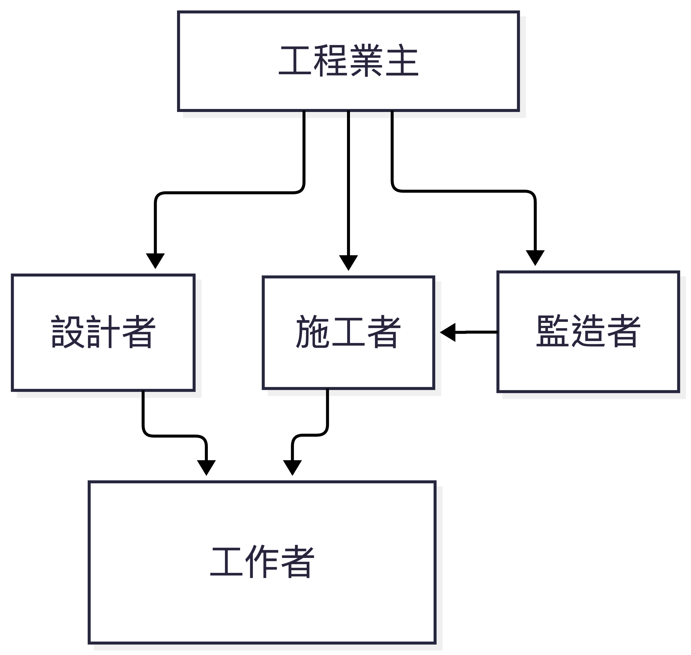
台灣指引強調「工程業主為核心」，但業主本身不直接執行風險評估，而是透過契約要求設計者與施工者辦理，並由監造者監督。
角色對照：英國 CDM vs 台灣指引
| 功能角色 | 英國 CDM 2015 | 台灣職安署指引（第三版） | 差異分析 |
|---|---|---|---|
| 業主 | Client：負主動管理責任，須任命主導設計者與主導施工者 | 工程業主：採購管理、監督審核、建立風險平台 | 英國業主法定義務更重，須確保資源與時間充足 |
| 設計階段整合者 | Principal Designer：專責協調設計風險；必須是設計師 | 主要設計者：彙整各設計者成果；職責較偏文書彙整 | 英國 Principal Designer 決策權與協調權更明確 |
| 施工階段整合者 | Principal Contractor：統籌施工安全管理 | 主要施工者：彙整風險評估成果、編製報告 | 英國 Principal Contractor 須制定施工階段計畫 |
| 設計者 | Designer：須達成「合理可行」的風險消除 | 設計者：實施設計階段風險評估，編製安衛圖說與經費 | 英國設計者須與 Principal Designer 密切協作 |
| 施工者 | Contractor：遵循施工階段計畫 | 施工者：施工規劃評估、作業前調查、變更評估 | 英國施工者須遵循上級協調指令 |
| 第三方監督 | HSE 檢查；無強制監造角色 | 監造者：訂定安衛監督查核計畫 | 台灣有法定監造角色，英國無 |
風險評估範圍的比較
| 階段 | 英國 CDM 2015 | 台灣職安署指引 |
|---|---|---|
| 可行性/規劃 | 業主與主導設計者須確保初步設計納入安全考量 | 可行性研究：風險及不定性分析；綜合規劃：安全衛生初步規劃 |
| 設計階段 | 設計者須依「一般預防原則」消除或降低風險；殘餘風險須傳遞 | 設計階段風險評估：方案評選、施工風險評估、風險處理 |
| 施工前規劃 | 主導施工者制定 Construction Phase Plan | 施工規劃階段風險評估 + 施工計畫 |
| 作業前 | Contractor 提供工地安全教育及資訊 | 作業前危害調查、評估及勤前教育 |
| 變更管理 | Management of Change（MOC）精神 | 工程變更施工風險評估 |
| 使用維護 | Health & Safety File + 維護資訊 | 使用維護手冊 + 施工風險管理報告 |
英國 CDM 的核心工具
1. Pre-construction Information（施工前資訊）
業主須提供給設計者與施工者的資訊，包括：
專案描述、關鍵時程
已知危害（如石綿調查、地下管線）
既有安全檔案（如有）
管理安排（合作、協調機制）
「施工前資訊」是設計者進行風險評估的起點（HSE L153, Appendix 2）
2. Construction Phase Plan（施工階段計畫）
主導施工者制定，內容須包括：
安全管理安排
工地規則
Schedule 3 特定高風險作業的特別措施
相當於台灣的「施工計畫」加上「風險評估報告」
3. Health & Safety File（安全檔案）
竣工後移交業主，供未來維護、改建、拆除使用：
結構設計原則
殘餘風險資訊
危險材料位置
設備維護資訊
相當於台灣的「使用維護手冊」+「施工風險管理報告」
風險評估方法的對照
| 方法論面向 | 英國 CDM 2015 | 台灣職安署指引 |
|---|---|---|
| 風險定義 | 未明確定義，但沿襲 HSE 既有架構 | 參考 ISO 31000：可能性 × 嚴重度 |
| 風險矩陣 | 未強制規定特定矩陣 | 提供 3×3 與 5×5 矩陣範例 |
| ALARP 原則 | 明確採用「合理可行（reasonably practicable）」 | 明確定義「最低合理可行範圍（ALARP）」 |
| 一般預防原則 | Appendix 1 列出 9 項原則（如源頭控制、集體優於個人） | 指引中雖未獨立列出，但風險對策階層（消除、降低、工程、管理、防護具）與其一致 |
| 評估表單 | 無制式表單，由專業人員依實務判斷 | 提供簡易版、基本版、標準版三種表單範例 |
英國 CDM 的「一般預防原則」（General Principles of Prevention）
英國 HSE《建築設計與管理法規 2015 (CDM 2015)》附錄 1 (Appendix 1) 要求所有設計者、主導設計者、主導施工者、施工者在執行職務時，必須考量 Management Regulations 1999 Schedule 1 的九項原則（HSE L153, Appendix 1）：
避免風險 (avoid risks)。
評估無法避免的風險 (evaluate the risks which cannot be avoided)。
從源頭對抗/控制風險 (combat the risks at source)。
使工作適應個人 (人因工程) (adapt the work to the individual)：特別是在工作場所的設計、工作設備的選擇，以及工作和生產方法的選擇上。其主要目的是減輕單調工作或固定節奏的工作，從而降低這些工作對健康的影響。
配合技術的進步進行調整 (adapt to technical progress)。
以無危險或較低危險的事物取代危險事物 (replace the dangerous by the non-dangerous or the less dangerous)。
制定連貫的整體預防政策 (develop a coherent overall prevention policy)：該政策應涵蓋技術、工作組織、工作條件、社會關係以及與工作環境相關因素的影響。
集體防護措施優先於個人防護措施 (give collective protective measures priority over individual protective measures)。
給予員工適當的指示與指導 (give appropriate instructions to employees)。
這套原則與台灣指引的「風險對策階層」（消除、降低、工程、管理、防護具）實質一致，但英國更強調 組織政策與社會關係。
台灣與英國風險管理流程對照
| 步驟 | 英國 CDM 2015 | 台灣職安署指引 |
|---|---|---|
| 1. 界定範圍 | 業主設定專案目標、時程、資源（Reg.4） | 界定範圍、內容及準則（5.2.2） |
| 2. 風險辨識 | 設計者辨識設計風險；主導設計者協調（Reg.9,11） | 辨識工址環境、工程需求、作業潛在危害 |
| 3. 風險分析 | 依一般預防原則分析 | 分析可能性與嚴重度，計算風險值 |
| 4. 風險評量 | 決定風險是否「合理可行」處理 | 依風險等級（極高/高/中/低/極低）決定處理優先順序 |
| 5. 風險處理 | 設計者→消除/降低；主導設計者→資訊傳遞；主導施工者→施工階段計畫 | 消除→降低→工程控制→管理控制→個人防護具 |
| 6. 資訊傳遞 | Pre-construction Information → Construction Phase Plan → Health & Safety File | 設計階段報告 → 施工規劃報告 → 施工風險管理報告 → 使用維護手冊 |
| 7. 監督與審查 | 業主確保主導設計者與主導施工者履行職責；HSE執法 | 業主審核、監造者監督查核、主管機關檢查 |
實際案例：高架作業墜落風險
英國 CDM 2015 的處理方式
設計階段：設計師是否可在屋頂設計永久護欄或錨點？是否可將空調主機移至地面？
施工前資訊：業主提供既有結構圖、墜落風險區域
施工階段計畫：主導施工者訂定安全網、護欄、個人防墜系統
安全檔案：竣工後記錄需維護的墜落防護設備位置及檢測週期
台灣指引的處理方式
設計階段：設計者實施風險評估，繪製安全衛生設施參考圖說（如護欄標準圖）
施工規劃：施工者擬定施工計畫，納入墜落預防措施
作業前危害調查：每日確認護欄、安全母索、安全帶勾點
使用維護手冊：記錄維護時高空作業的安全要求
差異：英國 CDM 要求設計階段即需評估「維護時的安全」，並將資訊傳遞至安全檔案；台灣指引亦有類似要求（使用維護手冊），但實務落實度仍有加強空間。
對營造業甲種業務主管的啟示
| 英國 CDM 優點 | 可借鏡之處 |
|---|---|
| 業主責任明確 | 業主應在契約中明確要求設計者與施工者的風險評估義務，並提供足夠工期與經費 |
| Principal Designer 專業角色 | 大型營造工程可考慮設置類似「設計安全協調人」角色，專責整合設計風險 |
| Construction Phase Plan | 施工計畫應整合各工項風險評估成果，成為工地日常管理的核心文件 |
| Health & Safety File | 竣工時應交付完整的安全檔案，不僅供查核，更要讓未來維護者能安全作業 |
結論：英國 CDM 的核心精神
「安全不是檢查表，而是從設計到拆除的持續對話」
責任分配明確：業主、設計者、施工者各有明確且不可轉嫁的法定職責。
風險資訊流動：Pre-construction Information → Design Risk Information → Construction Phase Plan → Health & Safety File，形成完整追蹤鍊。
設計階段是關鍵：約 70% 的風險可在設計階段消除或降低，成本最低、效果最好。
工作者參與：CDM 明確要求主導施工者須諮詢工作者並讓他們參與安全決策。
Important
安全是設計出來的！
結語：台灣實務
台灣指引已具備與國際接軌的基礎架構（設計階段評估、作業前調查、變更管理、使用維護手冊）。
強化重點：
提升業主主動管理的意識與能力
加強設計階段與施工階段的風險資訊傳遞機制
參考 CDM 的 Construction Phase Plan 概念，將風險評估真正融入日常工地管理
建立安全檔案（Health & Safety File） 的標準格式與交付義務
Caution
甲種業務主管應扮演 風險溝通橋樑，確保設計端的風險資訊能確實傳遞至施工端與維護端。
Q & A
參考文獻：
HSE (2015). Managing health and safety in construction: Construction (Design and Management) Regulations 2015. Guidance on Regulations (L153). Health and Safety Executive.
勞動部職業安全衛生署 (2025). 營造工程風險評估技術指引（第三版）.
勞動部職業安全衛生署. 營造工程施工風險評估技術指引解說手冊（核定版）.
課程與本講義聲明
本網頁資訊供職安衛專業人員課程使用，在合理使用上（不涉及商業營利）原則下，歡迎分享，以充實職安衛專業與防止職災。
本網頁內容雖有參考依據，但仍有ＡＩ工具之協助與應用，正確性上容有疏誤，職安衛專業人員仍應參考相關法規、資訊與指引等，做出正確判斷。
本網頁講義可透過列印功能，做成ＰＤＦ電子檔案，不另行提供紙本。
Note
講師：何明信 職安衛技師、退休專業檢查員 2026-05
prepared by Peter Ho.